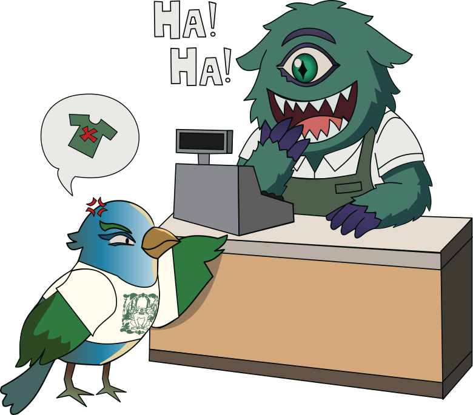

Trocas e devoluções

Como funciona
Para solicitar uma troca ou devolução, entre em contato conosco informando o número do pedido e o motivo da solicitação.
O produto deve estar sem sinais de uso e acompanhado dos seus itens originais. Nossa equipe responderá com as próximas orientações.